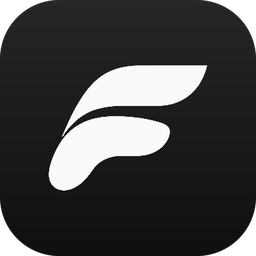

Work hard. Play fast.
Der schlanke Browser für Gaming und Büro unter Windows 11. Wenig RAM, ein Dashboard mit Live-Werten, Boost auf Knopfdruck – und neun Designs, die zu dir passen.
Fusion nutzt die Chromium-Engine, die schon in Windows steckt – deshalb ist die Installation klein und Webseiten laufen wie gewohnt.
Ein Klick legt Hintergrund-Tabs schlafen und gibt Speicher frei. CPU- und RAM-Limit stellst du direkt im Dashboard ein.
Uhr, Suche, eigene Schnellzugriffe, Aufgabenliste und Live-Werte für RAM, Bildwiederholrate und Ping.
Läuft ein Spiel im Vollbild, tritt Fusion automatisch zurück: Tabs schlafen, CPU-Priorität sinkt.
Claude, ChatGPT, Gemini oder Perplexity direkt neben jeder Seite. Text markieren, Rechtsklick, zusammenfassen lassen.
Links mit Umschalt+Klick als schwebende Vorschau öffnen – ohne die aktuelle Seite zu verlassen.
EasyList und EasyPrivacy sind eingebaut. Pro Seite mit einem Klick abschaltbar.
Zwei Seiten nebeneinander – etwa Guide und Spiel-Wiki oder Mail und Dokument.
Notizen und Erinnerungen direkt an einer Seite – mit Windows-Benachrichtigung zur richtigen Zeit.
Unbenutzte Tabs schlafen nach einer einstellbaren Zeit und wachen beim Anklicken wieder auf.
Lesezeichen, Verlauf, offene Tabs und Suchmaschine aus Chrome, Edge, Opera, Brave, Vivaldi oder Firefox übernehmen.
Tabs zu farbigen Stapeln bündeln, auf mehrere Fenster und Monitore verteilen und die Anordnung speichern.
Inkognito-Fenster, Nur-HTTPS-Modus und Berechtigungen für Kamera, Mikrofon & Co. pro Website.
Eine Suchleiste für Tabs, Lesezeichen, Verlauf, Web und Rechner – per Tastenkürzel aus jedem Programm.
Ein Druck blendet alle Fenster aus und pausiert Videos – auf Wunsch geschützt mit PIN oder Windows Hello.
Gratisspiele, Rabatte und Wunschliste mit Preisalarm. Ab Werk aus; du schaltest sie selbst ein.
Wähle eine Special Edition – jede bringt ihre eigenen Farben und ihren Hintergrund mit.

Installer für Windows 10/11 (64 Bit). Keine Administratorrechte nötig.
Ja. Fusion ist (noch) nicht mit einem kostenpflichtigen Zertifikat signiert, deshalb warnt SmartScreen bei neuen Programmen. Klicke auf Weitere Informationen und dann Trotzdem ausführen.
Nein. Fusion nutzt die WebView2-Runtime, die in Windows 11 enthalten ist. Unter Windows 10 installiert der Installer sie bei Bedarf automatisch.
Nein. Verlauf, Lesezeichen, Notizen, Passwörter und Einstellungen bleiben auf deinem PC. Netzwerkzugriffe gibt es nur zu den Seiten, die du besuchst, zur Update-Prüfung, zu den Filterlisten des Werbeblockers, zum Ping-Ziel (abschaltbar), zur KI, die du selbst auswählst, und – nur wenn du sie einschaltest – zu den Quellen der Spiele-Deals. Details in der Datenschutzerklärung.
Fusion prüft beim Start, ob es eine neue Version gibt, und zeigt sie auf dem Dashboard an. Ein Klick auf „Jetzt aktualisieren“ genügt – Updates sind digital signiert. Wer noch Version 0.4.0 oder älter hat, installiert einmalig die aktuelle Version von dieser Seite.
Ja, unter Einstellungen › System. Links aus anderen Apps öffnen sich dann in Fusion.
Über Windows-Einstellungen › Apps › Installierte Apps › Fusion › Deinstallieren.